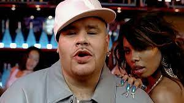

INFO:
"Terror Squad" was first formed in 1998 out in Bronx, New York. In 1999, they had they're first major hit called "Whatcha Gon' Do", in 2000 one of the members "Big Pun" died of a heart attack splitting up the group until 2004 when two members, (Remy Martin, and Tony Sunshine) took over and created "Lean Back" which hit #1 on the top 100 billboard.
